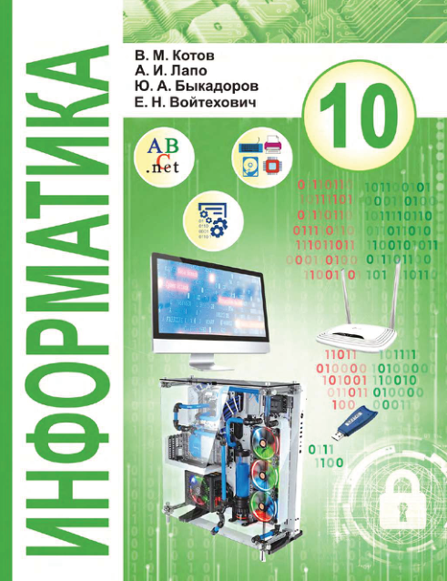

ОСНОВА УЧЕБНОГО КУРСА
Твой учебник
Оригинальное пособие, по которому построены все темы сайта.

Информатика. 10 класс
Учебное пособие для учреждений общего среднего образования с русским языком обучения (с электронными приложениями).
- Авторы
- В. М. Котов, А. И. Лапо,
Ю. А. Быкадоров, Е. Н. Войтехович - Издательство
- Минск, «Народная асвета»
- Год издания
- 2020
- ISBN
- 978-985-03-3168-7
На сайте используется PDF, прикреплённый к заданию. Все права на учебное пособие принадлежат правообладателям. Конспекты и тренировочные задания сайта не заменяют полный текст. Электронные приложения, упомянутые в книге, в прикреплённый файл не входят и здесь не воспроизводятся.
Содержание пособия
Весь курс →Введение
Начните с главного: что такое алгоритм и как разговаривать с компьютером на языке программирования.
Алгоритмы обработки массивов
Научитесь хранить наборы данных, находить нужные элементы и создавать алгоритмы их обработки.
Компьютер как универсальное устройство обработки информации
Разберитесь, как устроен компьютер и как числа, тексты, изображения и звук становятся данными.